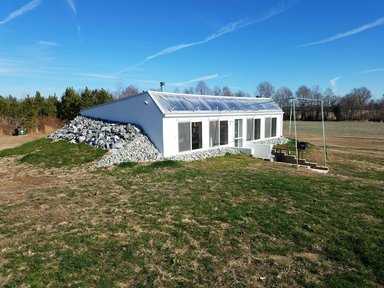
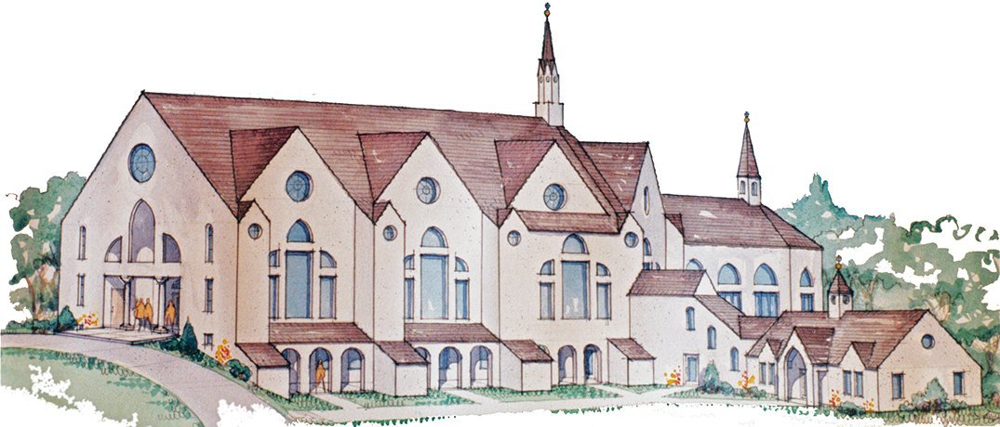
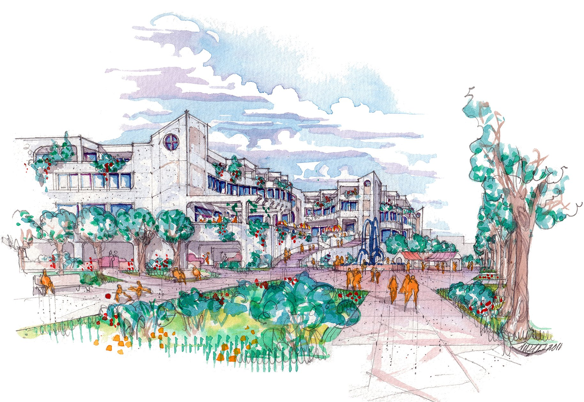

Homes built to endure
Earth-bermed, passive-solar and fortified homes, turnkey or owner-built.
Custom homes, wineries, churches and commercial spaces across Virginia and beyond. Each is designed from the structure out for comfort, durability and a fraction of the usual running costs.
Start a project
For fifty years we have designed buildings meant to outlast their owners' mortgages and serve their grandchildren. We begin with the land, the sun and the structure. Everything else follows.

Earth-bermed, passive-solar and fortified homes, turnkey or owner-built.

Fast, permit-ready fit-outs for landlords, franchisees and owners: restaurants, retail, offices. From the firm behind Virginia's first stand-alone CVS and Domino's.

Building with an am-cor ferrocement kit? We design around it: site adaptation, permit documents and engineering coordination.
Featured story
A former project manager in Washington, DC, Dawson sold his condo and moved to twenty acres of family farmland in the Virginia countryside. With our design, our permit set and our guidance, he managed the build himself: a $1.2 million earth-bermed, passive-solar ferrocement home. Building as owner-builder saved him roughly 20 percent.
“The design and the energy efficiency of our south-facing, earth-bermed home fit the country life we wanted.” [placeholder — Dawson's own words to follow]

Construction is roughly 18% of what a building costs over its life; heating, cooling and upkeep are the other 82%. Spend wisely on the envelope now, and save 30–50% of that 82% for as long as the building stands.
Angus W. Macdonald trained at Yale and has practiced since 1975. He is an AIA and NCARB member and has spoken at the AIA and the India Ferrocement Society. His son, Angus M. Macdonald, works alongside him as Designer. You work directly with both of us.
M.Arch Yale · AIA · NCARB · USGBC · Licensed in VA MD NC SC FL NY VT
Your first consultation is free — in our Culpeper office, by video, or on site if you are nearby. Design is then billed hourly against a retainer, so you pay only for the work your project needs.
Start a project